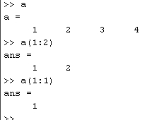
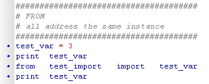
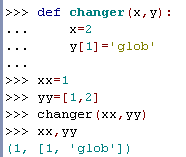

december 2006
MatLab - Python
This document describes my experiences (with simple Scientific math), going from MatLab to Python. In this document it's assumed that always NumPy and SciPy are used, so we have the same basic computational elements. Although both programs look very similar, there are some small differences which are very important to notice.
General Feeling
This is a list of feelings (sometimes facts) about my first contact with Python, coming from MatLab. After writing it down in this list, an item it is never changed (it should represent the "first feeling"), but instead a remark is added when later on in time, the feeling/fact was incorrect.
Similarity
The similarity between MatLab and Python is sometimes very large, but beware of the small details !!
Here an example of a "chunked" filter (a filter that processes a continuous real-time signal in blocks), notice the slight difference in array indices !! Because I want to show the similarity, all comment was removed from the examples below.
Now when we put both code snippets in a procedure and we look at the function call:
And finally let's take a look at the function itself:
|
Type |
MatLab |
Python |
Remarks |
|
simple var |
A = 5.2 * pi ; |
A = 5.2 * pi |
integer-4 arbritary long integer float-8 complex-2*8 IMMUTABLE |
|
strings |
S1 = 'aap' ; |
S1 = 'aap' S2 = "aap" DOC_S = """this is doc""" |
C-type backslash chars IMMUTABLE accessed by Index |
|
list |
-- |
L1 = [ ] L2 = [ 2, 'hello', 45 ] |
heterogeneous collection MUTABLE accessed by Index |
|
tuple |
cell-array |
T1 = ( ) T2 = ( 2, 'hello', 45 ) T3 = 3, 'hello', 45 |
heterogeneous collection IMMUTABLE accessed by Index |
|
dictionary |
- |
D1 = { } D2 = { 'aap' : 1, 'beer': 2 } |
heterogeneous collection MUTABLE accessed by key (or value) |
|
array |
A1 = [ 1, 2 ] ; A2 = zeros ( 100 ) ; |
A1 = array ( [ 1, 2 ] ) A2 = zeros ( 100 ) |
homogeneous collection of any type highly MUTABLE accessed by index Many types, Bool, (U)INT-8,16,32,64 Float/Complex-32,64,96 |
|
sparse |
+ |
+ |
only useful if array contains many zeros |
All sequence types are nestable (without any depth restriction), for list, tuple, dictionary, array:
L3 = [ 2, 'hello', [ 45, 'aap', [ 2, 4 ] ] ]
T3 = ( 2, 'hello', ( 45, 'aap', ( 2, 4 ) ) )
D3 = { 'aap' : 1, coala: { 'beer': 2 } }
A3 = array ( [ [ 1, 2 ] , [ 4, 5 ] ] )
or even in every random combination / nesting:
R3 = [ 2, 'hello', ( 45, 'aap', [ 2, 4 ], { 'aap' : 1, coala: { 'beer': 2 } } ) ]
List and Tupple are different in their mutability and therefore also their methods differ.
MUTABLE:
IMMUTABLE:
In older documents there's sometimes made a distinct between numpy.array( ), numpy.ndarray( ) and scipy.array( ), this difference doesn't exists anymore.
Differences
|
MatLab |
Python |
MatLab |
Python |
|
|
Global Variables |
Local Variables |
$2500 |
FREE |
|
|
not OOP |
Object Oriented Programming |
Just Math |
Math + general programming |
|
|
1 function / file |
unlimited |
only simple / fixed embedding |
both embedding + encapsulation are promoted and well supported |
|
|
3..7 times faster |
footprint 110 MB |
footprint 10 MB |
||
|
master-pupil help |
real help until it's solved |
|||
|
"only available, if you work at MatLab" |
Everything is traceable and open |
|||
Array Indices, Slices
|
MatLab |
Python |
|
array indices starts at 1
|
array indices starts at 0 |
|
slices includes the last index  |
slices excludes the last index |
import scipy
import pylab
phi = range(100)
r=phi #sin(cos(tan(phi)))
pylab.polar(phi,r)
pylab.show()
This is one of the most difficult to understand features of Phyton.
|
The file/module test_import:
|
|
|
|
This seems the most unambiguous solution. The disadvantage is that you always have to reference the object. |
|
Unambigious solution, with short object reference. |
|
|
 |
This is the most easy solution.
|
|
The most universal solution, but quit ambiguous. |
Functions
Another almost impossible to understand Python feature
|
 |
# create function # x=simple var, thus local, it doesn't change anything in outside world !!!! # y=complex and will therefor change the outside world # as you can see # xx is left unmodified # yy is changed by the function call |
|
Elements |
Python |
MatLab |
|
Lists |
||
|
Arrays |
||
|
Tuples |
||
|
Types |
bool_ uint8 uint16 uint32 uint64 int8 int16 int32 int64 float32 float64 float96 complex64 complex128 complex192 |
|
|
Arrays |
Python |
MatLab |
|
Creation 100 numbers equally spaced from 3..10 |
A = array ( [ 1, 2, 3, 4 ] ) B = array ( [ (1, 2, 3 ) , ( 11, 12, 13 ) ] ) C = array ( [ ] ) D = zeros ( 4 ) E = ones ( ( 3,4 ) ) E = ones ( 3, dtype = int ) F = linspace ( 3, 10, 100 ) G = random ( ( 2, 3 ) ) |
|
|
Dimensions |
B.ndim => 2 B.shape => ( 2, 3) len( B ) => 2 size(B) => 6 |
|
|
Type |
B.dtype => dtype('<i4') B.itemsize => 4 B.dtype.name => 'int32' |
|
|
Speed |
right index first: [0,0], [0,1] ... |
|
|
NO COPY !! A and B are different names for the same object !! |
A = ones ( 4 ) B = A B = ones ( 3 ) A => array ( [ 1, 1, 1 ] ) |
|
|
VIEW or SHALLOW COPY B can't change properties of A |
A = ones ( 4 ) B = A . view ( ) |
|
|
(DEEP) COPY this is a real copy |
A = ones ( 4 ) B = A . copy ( ) |
|
Array Concatenate |
Python |
MatLab |
|
concatenate |
||
|
r_ |
||
|
c_ |
||
|
hstack |
||
|
vstack |
||
|
Elements |
Python |
MatLab |
|
Colors |
b : blue g : green r : red c : cyan m : magenta y : yellow k : black w : white |
|
|
Arrays |
||
|
Tuples |
||
|
Elements |
Python |
MatLab |
|
Lists |
||
|
Arrays |
||
|
Tuples |
||
|
Elements |
Python |
MatLab |
|
Lists |
||
|
Arrays |
||
|
Tuples |
||
|
Elements |
Python |
MatLab |
|
Lists |
||
|
Arrays |
||
|
Tuples |
||
Comparison
Simulation
ScriptSim Verilog PLI Python Interface Language Reference Manual
MyHDL a Python-Based Hardware Description Language Linux Journal
Links
matlab-python-xref.pdf (applicationpdf Object)
In <d2b4$4593df5a$d443bb3a$12073@news.speedlinq.nl>, Stef Mientki wrote:
> > I want to return a "simple" variable from a function, not using the
> > function result.
Why?
> > The code below is from O'Reilly, "Learning Python", and there seems no
> > way to return a simple var like "z" in the example below. Is that true ?
To return objects the ``return`` statement is used.
> > def some_function (z, y):
> > z = 2
> > y[2] = 'global ?'
Add:
return z
The string content seems to be a question. No `y` is not global here but
you modify the content of the object that's bound to the local name `y`.
Modifying an object is different from binding a name to a new object.
``y = ['uno', 'dos', 'tres']`` would not be visible outside the function.
> > x = 5
> > y = [1,2,3,4]
> > print x,y
> > some_function(x,y)
Change to:
x = some_function(x, y)
Ciao,
How about restructuring your function like this:
def some_function( z,y ):
z = 2
y[2] = 'global ?'
return z
And then you'll have to react to the returning variable, like this in
your code:
x = 5
y = [1,2,3,4]
print x,y
print some_function( x, y )
print x,y
Now, it appears like you want some_function() to change x and y. It
doesn't really work that way. You'd have to either pass the variables
by reference into the function, or overwrite the existing values with
whatever the function returns. That might be beyond your scope now though.
Keep plugging, and welcome to Python!
On Thu, 2006-12-28 at 16:14 +0100, Stef Mientki wrote:
Please reset your brain and read
http://effbot.org/zone/python-objects.htm , paying particular attention
to the section called "Assignment".
You should also think long and hard about *why* you want to return a
value from a function by modifying an input parameter instead of just
using the return statement. The "return by modifying an input parameter"
approach comes from C where that's the only way to return more than one
value from a function. In Python, no such crutch is necessary or
desirable.
With this in mind, the following quote seems appropriate:
"Trying to write C code using Python isn't going to be fun or
productive." -- Grant Edwards, comp.lang.python, 13 Sep 2006.
Hope this helps,
Carsten.
On Thu, 2006-12-28 at 15:28 +0000, Paul Hummer wrote:
> > You'd have to either pass the variables by reference into the function, [...]
In Python, all function calls are call by reference. Period. The key
difference between Python and other programming languages is in the
behavior of the assignment statement.
To paraphrase http://effbot.org/zone/python-objects.htm :
In C/C++, assignments modify objects by copying the value from the right
hand side into the memory allocated to the object on the left hand side.
In Python, assignments modify namespaces by making the name on the left
hand side become a reference to the object on the right hand side. It is
irrelevant whether the name referred to some other object before the
assignment, and it is irrelevant whether that object is mutable or not.
The only way to achieve call-by-reference-like behavior in the
"assignment modifies objects" sense is by passing a reference to a
mutable object and then invoking the object's methods to mutate it.
Maybe that's what you meant, but that wasn't clear from what you said.
-Carsten
> You should also think long and hard about *why* you want to return a
> value from a function by modifying an input parameter instead of just
> using the return statement. The "return by modifying an input parameter"
> approach comes from C where that's the only way to return more than one
> value from a function. In Python, no such crutch is necessary or
> desirable.
>
Nobody mentioned the term for this. When a function changes its parameters or its environment, then it is called a "side effect" and generally it is considered harmful in all modern languages. ("Function" here refers to a piece of code that is used to calculate one or more values and provide these values to the caller.)
So you are trying to create a function that has a side effect. You should not do this, unless you have a really good reason.
Regards,
Laszlo